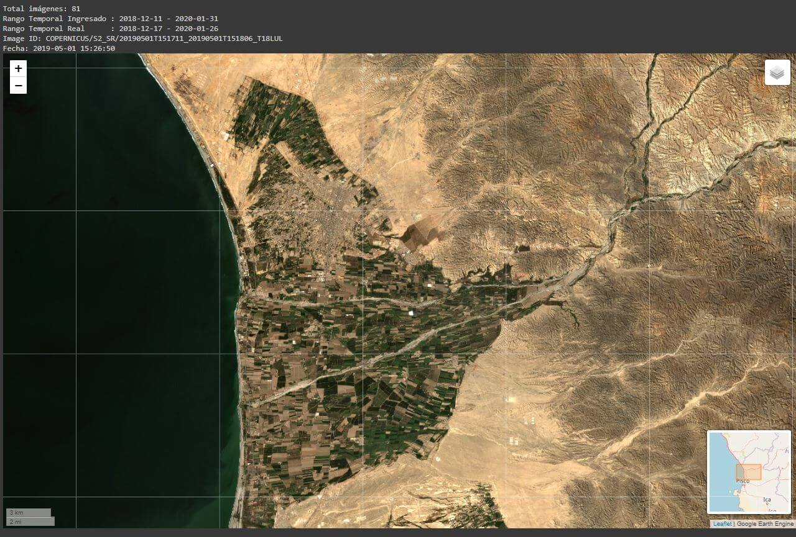
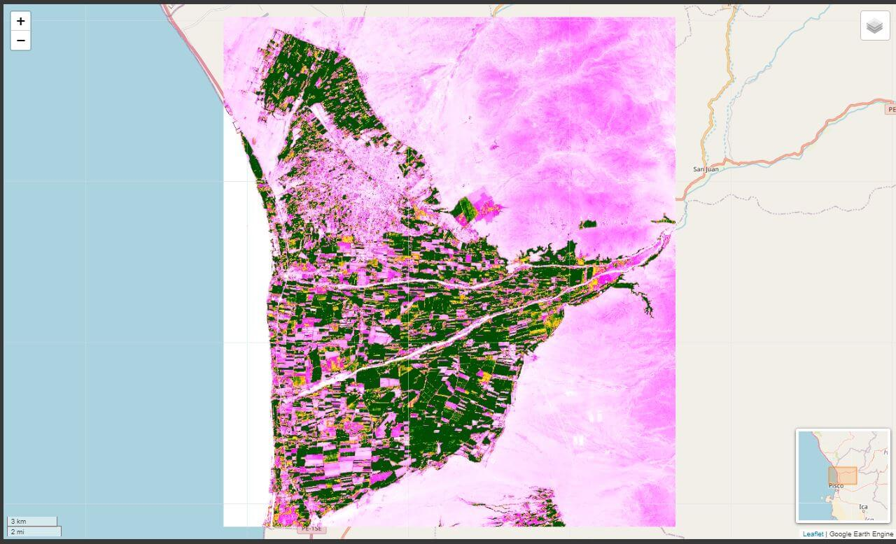
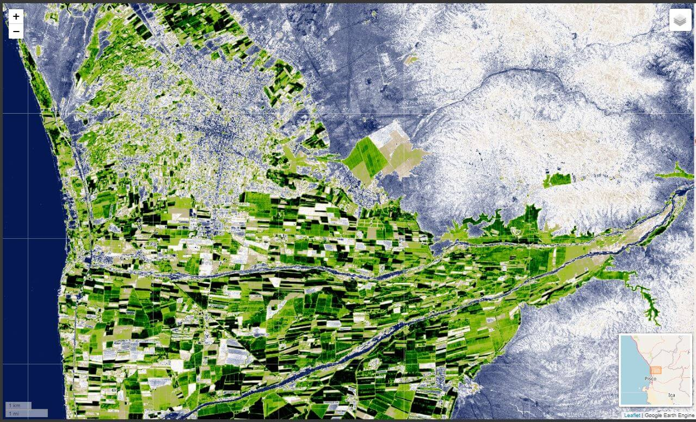

Introducción a la API
Google Earth Engine nace a partir de la necesidad de una base de datos geoespaciales de fácil acceso (diseñado para investigadores sin experiencia previa en programación).
Para mayor información:
- Google Earth Engine - Portal
- Google Earth Engine - Creación de cuenta
- Google Earth Engine - FAQ
- Artículo científico - Google Earth Engine: Planetary-scale geospatial analysis for everyone
- Google Earth Engine - Documentación
- Google Earth Engine - Instalación de la API de Python
- Google Earth Engine - Referencia de la API: todos los comandos disponibles en Earth Engine
- Google Earth Engine - Guías: (en su mayoría en lenguaje
JavaScript) - Google Earth Engine - Tutoriales
Probando EE
A continuación presentaré algunos ejemplos sobre los resultados que he podido generar usando la plataforma de Earth Engine (en Python y en JavaScript).
- Nevado Yerupajá, Dataset: Sentinel-2A

- Valle de Chincha, Dataset: Sentinel-2A 
- Valle de Chincha, Dataset: Landsat 7

- El Perú, Dataset: Landsat 7

- El Perú, Dataset: Landsat 8

- Valle de Chincha - NDVI, Dataset: Landsat 8 
- Valle de Chincha - EVI, Dataset: Landsat 8 